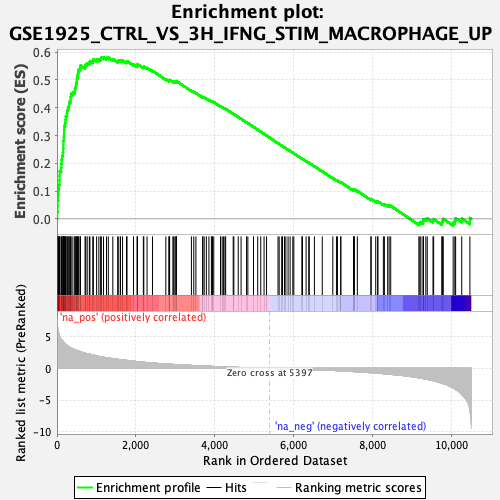
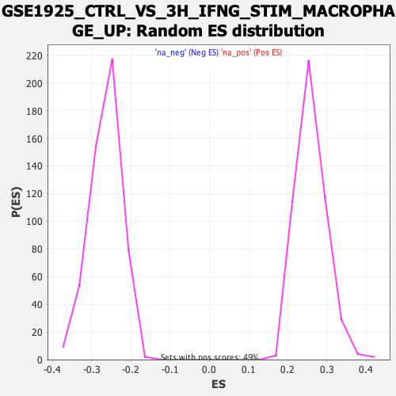

| Dataset | qlf.KOd4vsWTd4_gsea_score |
| Phenotype | NoPhenotypeAvailable |
| Upregulated in class | na_pos |
| GeneSet | GSE1925_CTRL_VS_3H_IFNG_STIM_MACROPHAGE_UP |
| Enrichment Score (ES) | 0.58088523 |
| Normalized Enrichment Score (NES) | 2.2401009 |
| Nominal p-value | 0.0 |
| FDR q-value | 0.0 |
| FWER p-Value | 0.0 |

| SYMBOL | RANK IN GENE LIST | RANK METRIC SCORE | RUNNING ES | CORE ENRICHMENT | |
|---|---|---|---|---|---|
| 1 | LTA | 6 | 7.378 | 0.0244 | Yes |
| 2 | NOP16 | 15 | 6.486 | 0.0455 | Yes |
| 3 | LAP3 | 16 | 6.481 | 0.0674 | Yes |
| 4 | PNO1 | 31 | 5.830 | 0.0857 | Yes |
| 5 | PPAN | 35 | 5.748 | 0.1049 | Yes |
| 6 | BCL2L11 | 50 | 5.412 | 0.1218 | Yes |
| 7 | IPO4 | 63 | 5.189 | 0.1382 | Yes |
| 8 | METTL1 | 65 | 5.025 | 0.1551 | Yes |
| 9 | TNFSF11 | 67 | 5.015 | 0.1719 | Yes |
| 10 | GCSH | 105 | 4.552 | 0.1837 | Yes |
| 11 | NDUFAB1 | 109 | 4.535 | 0.1988 | Yes |
| 12 | MRPL17 | 118 | 4.477 | 0.2131 | Yes |
| 13 | SMYD5 | 129 | 4.413 | 0.2271 | Yes |
| 14 | EIF4A1 | 149 | 4.282 | 0.2397 | Yes |
| 15 | BYSL | 156 | 4.245 | 0.2534 | Yes |
| 16 | FAM162A | 162 | 4.182 | 0.2671 | Yes |
| 17 | PPRC1 | 163 | 4.175 | 0.2812 | Yes |
| 18 | COPS7A | 173 | 4.099 | 0.2942 | Yes |
| 19 | MRPL45 | 178 | 4.068 | 0.3075 | Yes |
| 20 | TNFRSF4 | 180 | 4.044 | 0.3211 | Yes |
| 21 | PABPC4 | 184 | 4.025 | 0.3344 | Yes |
| 22 | AIMP2 | 205 | 3.914 | 0.3457 | Yes |
| 23 | TIMM9 | 216 | 3.844 | 0.3577 | Yes |
| 24 | SRM | 224 | 3.780 | 0.3698 | Yes |
| 25 | SLC19A1 | 252 | 3.653 | 0.3796 | Yes |
| 26 | HK2 | 261 | 3.562 | 0.3908 | Yes |
| 27 | NME1 | 281 | 3.482 | 0.4007 | Yes |
| 28 | RPL7L1 | 305 | 3.392 | 0.4100 | Yes |
| 29 | MECR | 310 | 3.371 | 0.4210 | Yes |
| 30 | NIFK | 345 | 3.253 | 0.4287 | Yes |
| 31 | TMEM70 | 347 | 3.248 | 0.4396 | Yes |
| 32 | DNMT3A | 357 | 3.221 | 0.4496 | Yes |
| 33 | SDHAF1 | 403 | 3.068 | 0.4556 | Yes |
| 34 | POLR1B | 452 | 2.934 | 0.4609 | Yes |
| 35 | TNFRSF1B | 456 | 2.930 | 0.4705 | Yes |
| 36 | BOP1 | 478 | 2.892 | 0.4782 | Yes |
| 37 | SLC5A6 | 484 | 2.866 | 0.4874 | Yes |
| 38 | NFKB2 | 503 | 2.830 | 0.4952 | Yes |
| 39 | MRPL35 | 506 | 2.827 | 0.5046 | Yes |
| 40 | CD72 | 520 | 2.805 | 0.5128 | Yes |
| 41 | SUPV3L1 | 528 | 2.791 | 0.5216 | Yes |
| 42 | SURF2 | 538 | 2.779 | 0.5301 | Yes |
| 43 | SFXN1 | 554 | 2.740 | 0.5379 | Yes |
| 44 | GART | 588 | 2.642 | 0.5436 | Yes |
| 45 | ACAD9 | 595 | 2.625 | 0.5519 | Yes |
| 46 | GEMIN5 | 712 | 2.395 | 0.5488 | Yes |
| 47 | MAPKAPK2 | 728 | 2.356 | 0.5553 | Yes |
| 48 | GUK1 | 766 | 2.301 | 0.5595 | Yes |
| 49 | CD82 | 820 | 2.234 | 0.5619 | Yes |
| 50 | DNAJC2 | 835 | 2.215 | 0.5681 | Yes |
| 51 | UQCC2 | 908 | 2.118 | 0.5683 | Yes |
| 52 | RPL22L1 | 922 | 2.102 | 0.5741 | Yes |
| 53 | TESK1 | 1005 | 1.980 | 0.5729 | Yes |
| 54 | NPEPL1 | 1062 | 1.884 | 0.5738 | Yes |
| 55 | UTP14A | 1107 | 1.824 | 0.5757 | Yes |
| 56 | FPGS | 1125 | 1.808 | 0.5802 | Yes |
| 57 | GPN1 | 1180 | 1.749 | 0.5809 | Yes |
| 58 | RARS2 | 1255 | 1.673 | 0.5794 | No |
| 59 | COMT | 1302 | 1.624 | 0.5804 | No |
| 60 | IRF4 | 1416 | 1.525 | 0.5746 | No |
| 61 | SOX4 | 1538 | 1.422 | 0.5678 | No |
| 62 | CD320 | 1567 | 1.399 | 0.5698 | No |
| 63 | RPLP1 | 1611 | 1.367 | 0.5702 | No |
| 64 | B4GALNT1 | 1663 | 1.327 | 0.5698 | No |
| 65 | TTL | 1762 | 1.256 | 0.5646 | No |
| 66 | DUSP2 | 1776 | 1.245 | 0.5675 | No |
| 67 | ST6GALNAC4 | 1941 | 1.120 | 0.5554 | No |
| 68 | HDDC2 | 2035 | 1.051 | 0.5500 | No |
| 69 | RPN2 | 2036 | 1.050 | 0.5535 | No |
| 70 | AGO2 | 2040 | 1.049 | 0.5568 | No |
| 71 | ITM2A | 2190 | 0.965 | 0.5456 | No |
| 72 | MIOS | 2202 | 0.959 | 0.5478 | No |
| 73 | ECE1 | 2284 | 0.903 | 0.5430 | No |
| 74 | DDB1 | 2422 | 0.843 | 0.5326 | No |
| 75 | PLGRKT | 2760 | 0.688 | 0.5024 | No |
| 76 | ODC1 | 2841 | 0.655 | 0.4969 | No |
| 77 | LGALS3 | 2842 | 0.654 | 0.4991 | No |
| 78 | MRPL36 | 2857 | 0.646 | 0.4999 | No |
| 79 | VCP | 2943 | 0.615 | 0.4938 | No |
| 80 | UQCRQ | 2948 | 0.613 | 0.4954 | No |
| 81 | RELB | 2989 | 0.600 | 0.4936 | No |
| 82 | ROMO1 | 3015 | 0.591 | 0.4932 | No |
| 83 | SLC35C2 | 3025 | 0.588 | 0.4943 | No |
| 84 | RPS15A | 3029 | 0.587 | 0.4960 | No |
| 85 | RPS27 | 3409 | 0.458 | 0.4609 | No |
| 86 | CSNK2A2 | 3469 | 0.438 | 0.4567 | No |
| 87 | VKORC1 | 3523 | 0.422 | 0.4530 | No |
| 88 | SLC25A25 | 3695 | 0.371 | 0.4377 | No |
| 89 | PEPD | 3697 | 0.371 | 0.4389 | No |
| 90 | NAB2 | 3733 | 0.361 | 0.4367 | No |
| 91 | P2RX4 | 3788 | 0.346 | 0.4326 | No |
| 92 | CLPB | 3853 | 0.330 | 0.4276 | No |
| 93 | BCL2L13 | 3916 | 0.313 | 0.4226 | No |
| 94 | GPD2 | 3936 | 0.308 | 0.4218 | No |
| 95 | STAT6 | 3943 | 0.306 | 0.4223 | No |
| 96 | PARP8 | 3976 | 0.297 | 0.4202 | No |
| 97 | TFB2M | 4147 | 0.253 | 0.4046 | No |
| 98 | RFC1 | 4189 | 0.244 | 0.4015 | No |
| 99 | CD5 | 4221 | 0.235 | 0.3993 | No |
| 100 | PDCD1 | 4259 | 0.224 | 0.3964 | No |
| 101 | LETM1 | 4278 | 0.221 | 0.3955 | No |
| 102 | ZFP1 | 4469 | 0.176 | 0.3777 | No |
| 103 | NR4A1 | 4486 | 0.172 | 0.3767 | No |
| 104 | ST7 | 4597 | 0.145 | 0.3666 | No |
| 105 | UBXN4 | 4669 | 0.130 | 0.3601 | No |
| 106 | YBX1 | 4808 | 0.104 | 0.3471 | No |
| 107 | MTOR | 4841 | 0.099 | 0.3444 | No |
| 108 | AQR | 4984 | 0.073 | 0.3309 | No |
| 109 | AHCYL1 | 5091 | 0.053 | 0.3208 | No |
| 110 | ZSWIM7 | 5168 | 0.040 | 0.3136 | No |
| 111 | SEPSECS | 5252 | 0.027 | 0.3057 | No |
| 112 | CRTAP | 5315 | 0.016 | 0.2997 | No |
| 113 | ANXA1 | 5606 | -0.033 | 0.2718 | No |
| 114 | PTPN13 | 5635 | -0.036 | 0.2692 | No |
| 115 | UBXN8 | 5699 | -0.047 | 0.2633 | No |
| 116 | DNAJC3 | 5720 | -0.050 | 0.2615 | No |
| 117 | TYRO3 | 5770 | -0.060 | 0.2570 | No |
| 118 | ENPP1 | 5805 | -0.065 | 0.2539 | No |
| 119 | EXTL3 | 5861 | -0.073 | 0.2489 | No |
| 120 | TNNT1 | 5913 | -0.082 | 0.2442 | No |
| 121 | TGM2 | 5981 | -0.093 | 0.2380 | No |
| 122 | CD6 | 6007 | -0.098 | 0.2360 | No |
| 123 | EIF4EBP1 | 6211 | -0.136 | 0.2168 | No |
| 124 | TERF2 | 6227 | -0.140 | 0.2158 | No |
| 125 | CERS2 | 6318 | -0.159 | 0.2076 | No |
| 126 | LCP1 | 6386 | -0.174 | 0.2018 | No |
| 127 | PAPOLA | 6398 | -0.178 | 0.2013 | No |
| 128 | EXT1 | 6529 | -0.206 | 0.1894 | No |
| 129 | STAT5A | 6728 | -0.257 | 0.1711 | No |
| 130 | CNPY2 | 6996 | -0.329 | 0.1464 | No |
| 131 | TYROBP | 7088 | -0.354 | 0.1388 | No |
| 132 | KLK8 | 7113 | -0.362 | 0.1377 | No |
| 133 | PIK3C3 | 7197 | -0.384 | 0.1310 | No |
| 134 | UBE2O | 7199 | -0.384 | 0.1322 | No |
| 135 | SH2D2A | 7524 | -0.501 | 0.1026 | No |
| 136 | CMIP | 7526 | -0.501 | 0.1042 | No |
| 137 | NCOR2 | 7535 | -0.507 | 0.1051 | No |
| 138 | SEC16A | 7540 | -0.508 | 0.1064 | No |
| 139 | USP4 | 7618 | -0.535 | 0.1008 | No |
| 140 | IER2 | 7961 | -0.679 | 0.0700 | No |
| 141 | TSC2 | 7969 | -0.681 | 0.0717 | No |
| 142 | NFATC1 | 8084 | -0.731 | 0.0631 | No |
| 143 | DUSP1 | 8135 | -0.755 | 0.0608 | No |
| 144 | C1QC | 8138 | -0.757 | 0.0632 | No |
| 145 | MSRB1 | 8278 | -0.831 | 0.0526 | No |
| 146 | RECQL5 | 8304 | -0.841 | 0.0530 | No |
| 147 | PACSIN1 | 8388 | -0.904 | 0.0480 | No |
| 148 | HK1 | 8424 | -0.928 | 0.0478 | No |
| 149 | SLC9A8 | 8464 | -0.948 | 0.0472 | No |
| 150 | AGPAT3 | 9179 | -1.497 | -0.0168 | No |
| 151 | JARID2 | 9202 | -1.528 | -0.0138 | No |
| 152 | FURIN | 9229 | -1.552 | -0.0110 | No |
| 153 | NUCB2 | 9286 | -1.604 | -0.0110 | No |
| 154 | LONP2 | 9290 | -1.608 | -0.0059 | No |
| 155 | PRKDC | 9296 | -1.614 | -0.0009 | No |
| 156 | SNX14 | 9355 | -1.678 | -0.0008 | No |
| 157 | MOV10 | 9391 | -1.724 | 0.0016 | No |
| 158 | TAOK3 | 9537 | -1.929 | -0.0059 | No |
| 159 | EPHX1 | 9553 | -1.968 | -0.0007 | No |
| 160 | CNN2 | 9759 | -2.350 | -0.0126 | No |
| 161 | BATF | 9776 | -2.377 | -0.0061 | No |
| 162 | STAT5B | 9797 | -2.425 | 0.0002 | No |
| 163 | ASAP1 | 10048 | -3.050 | -0.0137 | No |
| 164 | GLG1 | 10091 | -3.220 | -0.0069 | No |
| 165 | CD2 | 10111 | -3.303 | 0.0024 | No |
| 166 | LEF1 | 10266 | -4.114 | 0.0015 | No |
| 167 | SEMA4F | 10473 | -6.467 | 0.0034 | No |
